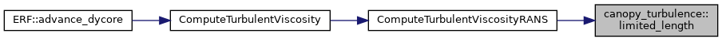
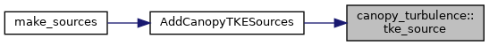

- Generated by
 1.9.1
1.9.1
|
ERF
Energy Research and Forecasting: An Atmospheric Modeling Code
|
Functions | |
| AMREX_GPU_HOST_DEVICE AMREX_FORCE_INLINE amrex::Real | limited_length (amrex::Real length, amrex::Real f_drag, amrex::Real alpha) |
| AMREX_GPU_HOST_DEVICE AMREX_FORCE_INLINE amrex::Real | tke_source (amrex::Real rho, amrex::Real rhok_old, amrex::Real f_drag, amrex::Real wind, amrex::Real beta_p, amrex::Real beta_d, amrex::Real dt) |
Canopy terms of the one-equation k RANS model (erf.rans_type = kEqn).
The forest drag removes mean kinetic energy from the flow. Part of it becomes turbulence in the wakes of leaves and branches, at scales far below the mesh, and dissipates quickly (the spectral short cut). With erf.forest_canopy_tke = true, two terms act where the forest drag field f = C_d LAD of ForestDrag is positive:
Input names, defaults and formulas follow the ForestDrag.canopy_* inputs of the KLAxell model in kynema-sgf (branch f/winsent of rthedin/amr-wind). In neutral air both codes run the same canopy model; Forest.rst lists where the time integration and the stratified closure differ.
| AMREX_GPU_HOST_DEVICE AMREX_FORCE_INLINE amrex::Real canopy_turbulence::limited_length | ( | amrex::Real | length, |
| amrex::Real | f_drag, | ||
| amrex::Real | alpha | ||
| ) |
Turbulent length scale capped in the canopy, min(length, alpha / f). Cells with f <= 0 are unchanged, and alpha = 0 disables the cap. The test alpha < length f avoids comparing with a large alpha / f. The cap is computed with a denominator that is never zero, because an optimised build may evaluate it before the test (as for 1/theta_ref in ERF_TurbKESources.H); adding the smallest normal Real leaves any f above min / epsilon unchanged.
Referenced by ComputeTurbulentViscosityRANS().

| AMREX_GPU_HOST_DEVICE AMREX_FORCE_INLINE amrex::Real canopy_turbulence::tke_source | ( | amrex::Real | rho, |
| amrex::Real | rhok_old, | ||
| amrex::Real | f_drag, | ||
| amrex::Real | wind, | ||
| amrex::Real | beta_p, | ||
| amrex::Real | beta_d, | ||
| amrex::Real | dt | ||
| ) |
Canopy source of rho k per unit volume and time for an RK stage that updates rho k from its value at the start of the step, (rho k)^n, over dt: rho beta_p f |U|^3 phi1(x) - (rho k)^n (1 - exp(-x)) / dt, with x = beta_d f |U| dt and phi1(x) = (1 - exp(-x)) / x. Taken alone, the stage update (rho k)^n + dt S is the exact solution of d(rho k)/dt = rho P - c rho k with P = beta_p f |U|^3 and c = beta_d f |U| frozen over the stage, (rho k)^n exp(-x) + rho (P / c) (1 - exp(-x)), so the canopy terms balance at rho P / c at any dt, and the canopy sink never removes more than (rho k)^n. The RK3 stages (dt/3, dt/2, dt from the start of the step) and the trapezoidal anelastic RK2 (both stages over dt) both update from (rho k)^n. The closure's own dissipation is a separate term: the explicit form adds -dt rho Cmu0^3 k^1.5 / L to that update, and the implicit form divides the update by 1 + dt Cmu0^3 sqrt(k) / L (positive, so k stays non-negative when the other terms do). With MovingFittedMesh the update is also scaled by the old and new detJ. In these cases the stage value is not the expression above, and the steady k is the balance of all the terms, not P / c. For f = 0 the source is zero (x = 0, phi1 = 1).
| rho | density of the stage |
| rhok_old | rho k at the start of the step |
| f_drag | forest drag field f = C_d LAD (1/m), not negative |
| wind | cell-centred wind speed |U| of the stage |
| beta_p | wake production coefficient |
| beta_d | short-circuit dissipation coefficient |
| dt | time step of the update the source enters (> 0) |
Referenced by AddCanopyTKESources().
